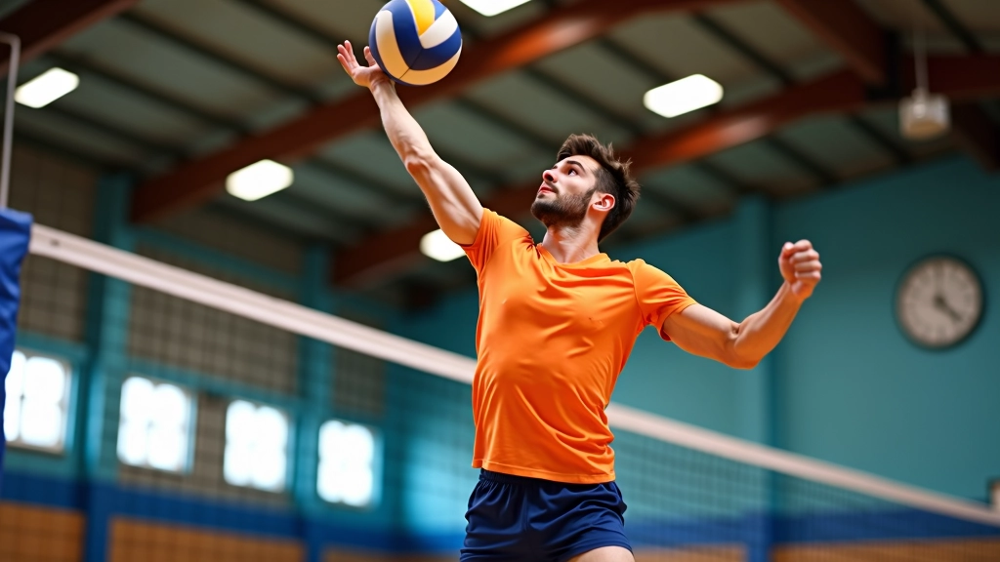

أساسيات الاستقبال السفلي الصحيح
تعلم المواضع الأساسية والحركات التي تشكل أساس كل استقبال فعال. نغطي وضع القدمين والكتفين والذراعين.
سلسلة من التمارين التي تحاكي ظروف المباراة الحقيقية. تركز على السرعة والدقة والثقة في المواقف الضاغطة.


من إعداد
فريق تحريري متخصص
من إعداد فريق الأهلي فولي التحريري، المتخصص في شرح تقنيات الكرة الطائرة بطريقة واضحة وعملية.
الفرق بين لاعب متوسط ولاعب متقدم ليس في الأساسيات — كلاهما يعرف الوضع الصحيح والحركة الأساسية. الفرق في الضغط. عندما تأتي الكرة بسرعة 90 كم/س وعندك ثانية واحدة للتفاعل، تحتاج عضلاتك وأعصابك وتركيزك أن يكون كل شيء مدرب جيداً.
التمارين المتقدمة لا تعلمك وضعاً جديداً. هي تعلمك كيفية تطبيق ما تعرفه تحت الضغط الشديد. تحتاج لتكرار الحركات في ظروف صعبة — كرات سريعة، زوايا غريبة، وقت قليل للتفاعل — حتى تصبح ردودك الفطرية صحيحة.
التمارين المتقدمة تحاكي ظروف المباراة الحقيقية بأكبر دقة ممكنة. هدفها بسيط: تحويل المهارة من شيء تفكر فيه إلى شيء تعمله بدون تفكير.
أول تمرين متقدم نركز عليه يبدأ ببطء ثم يسرع تدريجياً. الفكرة أنك تبدأ مع كرات سهلة بسرعة منخفضة، ثم كل دورة من التمرين تزيد السرعة. في الدورة الأولى قد تكون الكرة تأتي بسرعة 40 كم/س، الثانية 60، والثالثة 80 فما فوق.
هذا التمرين فعال جداً لأنه يسمح لك بالتكيف التدريجي. بدلاً من أن تتفاجأ بكرة سريعة، جسدك يعتاد على الزيادة التدريجية. بعد 6-8 أسابيع من التمرين المنتظم ثلاث مرات أسبوعياً، ستلاحظ أن الكرات السريعة بدأت تبدو أقل خطورة.

حتى مع السرعة العالية، وضع القدمين والكتفين يجب أن يبقى صحيح. لا تنسَ الأساسيات تحت الضغط.
بعد استقبال كل كرة، عد لموضع الاستعداد فوراً. هذا التعافي السريع هو ما يفصل بين اللاعب الجيد والمتقدم.
حافظ على نظرك على الكرة من لحظة مغادرتها يد الضارب. هذا يعطيك ملايين من الثانية إضافية للتفاعل.
عندما تكون متعباً ومتوتراً، يميل الناس لحبس الأنفاس. استنشق قبل الكرة، زفر أثناء الحركة.
هذا التمرين يحاكي الحقيقة الأساسية للعبة: الكرة لا تأتي دائماً مباشرة أمامك. تأتي من الجنب، من الخلف قليلاً، من الزوايا الغريبة. التمرين بسيط: شريك يرمي لك كرات من زوايا مختلفة بشكل عشوائي.
البداية تكون من 3 أمتار فقط، الكرات بطيئة. لكن بعد أسبوعين تزيد المسافة إلى 5 أمتار وتسرع الكرات. هذا يجبرك على التحرك أسرع، التنبؤ بأين ستذهب الكرة، والاستعداد قبل وصولها. بعد 4-5 أسابيع، ستصبح ردودك أسرع بكثير.
تعلم المواضع الأساسية والحركات التي تشكل أساس كل استقبال فعال. نغطي وضع القدمين والكتفين والذراعين.

الإنقاذ البنكيكي من أصعب التقنيات لكنه يمكن أن ينقذ اللعبة. نشرح كيفية ممارستها بأمان وفعالية.

الدفاع الجيد يبدأ قبل أن تُرمى الكرة. تعلم كيفية قراءة الهجوم والتنبؤ بحركات الخصم.
التمارين المتقدمة ليست للضعفاء. هي تحتاج انضباط، تركيز، وقبول الفشل. في البداية ستخسر كثير من الكرات. هذا طبيعي تماماً. كل كرة تخسرها في التمرين هي كرة لن تخسرها في المباراة.
المفتاح هو الاستمرارية. تمرين واحد لن يغير شيء. لكن التزامك لمدة شهرين — ثلاثة مرات كل أسبوع — سيحول طريقة لعبك تماماً. ستصبح أسرع، أكثر ثقة، وأقل خوفاً من الكرات السريعة.
ابدأ اليوم. اختر واحداً من التمارين المذكورة وركز عليه لمدة أسبوعين. ستفاجأ بالتطور الذي ستلاحظه على نفسك.
هذا المحتوى تعليمي بهدف شرح تقنيات الكرة الطائرة. تمارين الاستقبال والإنقاذ تحتاج إلى إشراف من مدرب متخصص للتأكد من سلامتك. لا تحاول التمارين المتقدمة بدون تدريب أساسي صحيح أولاً. في حالة أي إصابة أو ألم، توقف فوراً واستشر طبيباً. كل شخص مختلف، والتقدم يختلف من فرد لآخر.